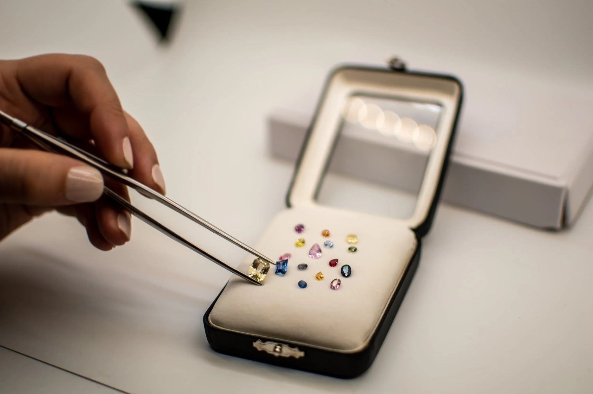
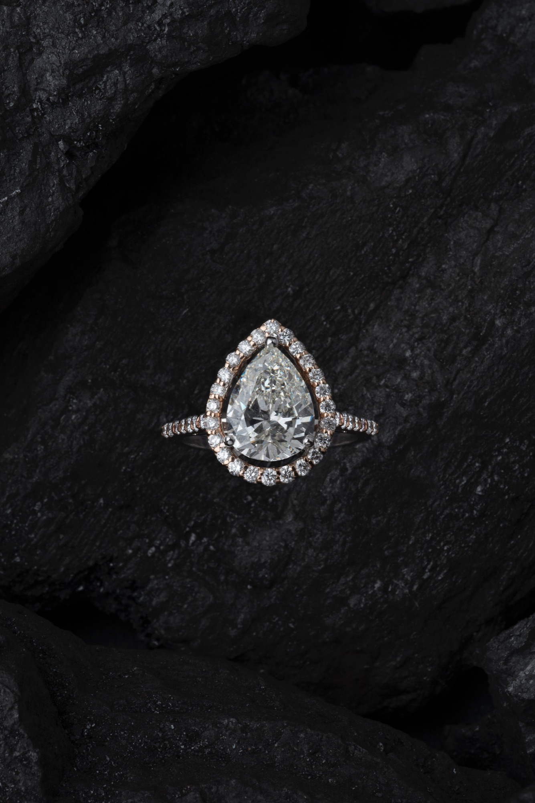
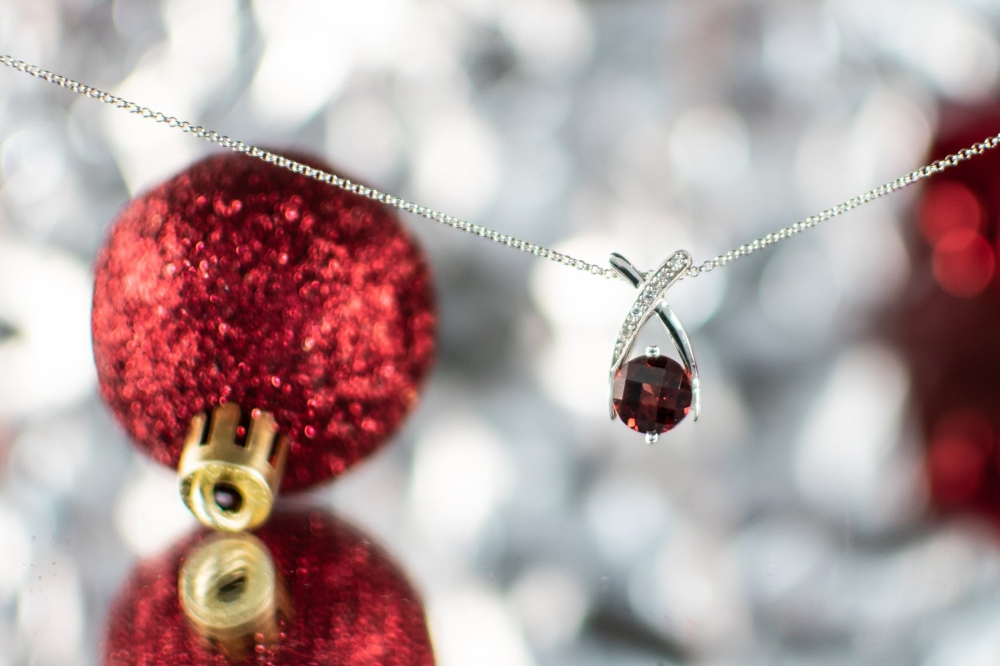
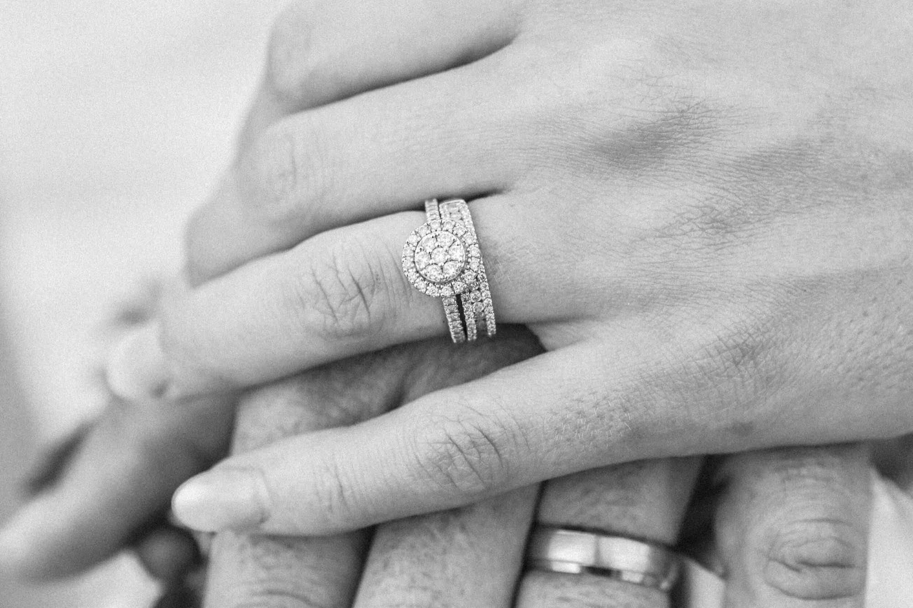
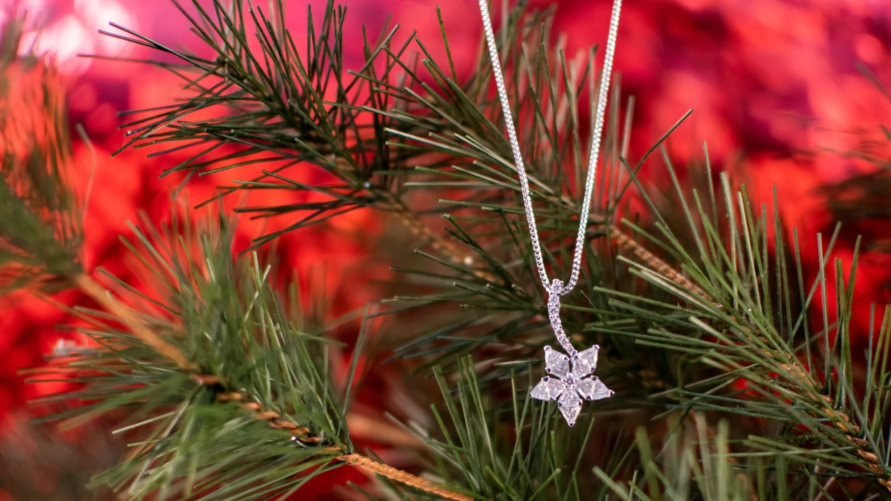
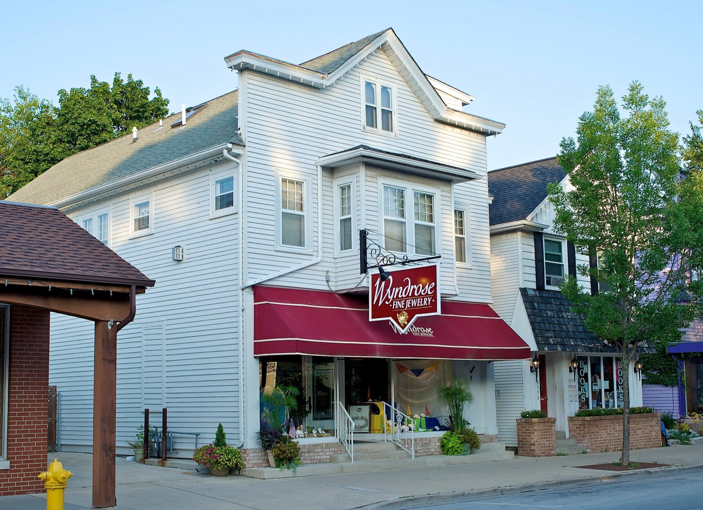

A jeweler in downtown Cedarburg since 1988.
Engagement rings, wedding bands, repairs, appraisals, and pieces designed from scratch. Come in and see them.
Family owned in Cedarburg, Wisconsin
Wyndrose Fine Jewelry sits on Washington Avenue in historic downtown Cedarburg. Our in-house graduate gemologist and staff can help you find the right piece, whether it is for yourself or for someone else. We carry everything from engagement rings and wedding bands to pendants, watches, and gifts.
This site will give you an idea of the quality we keep in the store. The selection changes constantly, so the best way to see it is to stop in.
And if you do not find what you are looking for, we can design it.
Design something that does not exist yet
Come in with a finished idea or with no idea at all. Either way, you work directly with us, the owners, from the first conversation to the finished piece. We keep loose stones in every shape, color, and size in the shop, and we have the largest selection of loose gemstones in Wisconsin at our fingertips.
We keep the process as hands-on as we can. Picking a design out of a catalog is one thing. Holding the parts, and seeing the exact components your piece will be made from, is another. You choose the stones yourself.

-
Talk it through
Bring an idea or bring nothing. We work through it with you and you pick the stones by hand.
-
See it before it exists
The goldsmith makes a rendering or a wax casting. We meet again and adjust until it is right.
-
Wear it
The piece is cast and set in the metal you choose.
Once the idea is settled, the plans go to our goldsmith, who makes a preliminary rendering or a wax casting. We meet again and either change the design or approve it. Seeing it take shape is usually where everyone figures out what they actually want. Your decisions go back to the goldsmith, and the piece is cast and set in the metal you choose.
How long does it take?
Most pieces run 2 to 4 weeks start to finish. There are exceptions, but the large majority take less than a month to go from an idea to something you can wear.
Does custom cost more?
Usually, no. That surprises people. If you are thinking about designing a piece, call or come by and we can give you a real sense of price and turnaround.
A full-service shop
Most of what we do happens at the bench in the back, and most of it happens here rather than being shipped somewhere else.
- Custom jewelry designdesigned with you, cast by our goldsmith
- Jewelry and watch repairfull service, in house
- Watch battery replacementsome done in just minutes
- Engraving
- Appraisalsby our in-house Graduate Gemologist (GIA)
- Pearl and bead stringingin house
- Gold buying
- Jewelry cleaning and inspection
- Insurance replacements
- Wish lists
- Consultations
- Free layaway
- Complimentary gift wrapping
Gift certificates are always available. Call or stop in any time.
What we carry
The selection changes constantly. This is what is usually in the cases.
- Diamond jewelry
- Wedding bands
- Precious and semi-precious colored stones
- Lola inspirational medallions
- Traditional charms
- Pearl jewelry and add-a-pearl necklaces
- Children's jewelry
- Men's and women's watches
- Men's tie tacs, money clips, bracelets, and cuff links
- Loose gemstones
- Gold, silver, platinum, titanium, and tungsten jewelry
Stop in to see what is in the cases this week.


Est. September 1, 1988
Ann and Greg
Wyndrose is a family owned, full-service jeweler on Washington Avenue in downtown Cedarburg. Ann is our in-house graduate gemologist. Greg is the repair man, and works behind the scenes. Between them they have over 70 years of experience, which is another way of saying there is no job here too big or too small. Whether you need something fixed, something designed, or something appraised, it stays in our hands.
Our promise to you
How Wyndrose came into existence is nothing short of a miracle, and we thank God for the opportunity and the blessing that this business and our customers are to us.
With gratitude and faith as the foundation of our humble jewelry store, we run the business on honesty, fairness, and love. Love is at the heart of everything we do, from mending a piece to helping you choose one. We take pride in every part of it, and we hope that shows in what you walk out with.

“We worked directly with the owners to customize the exact rings that we wanted… I would definitely recommend them!”
Beth
Visit the shop
We are on Washington Avenue in downtown Cedarburg. Call or email with a question, or to make an appointment outside our posted hours.
Cedarburg, WI 53012
- Wednesday to Friday
- 10:00 AM to 4:00 PM
- Saturday
- 10:00 AM to 1:00 PM
- Sunday to Tuesday
- Closed
- Or by appointment
